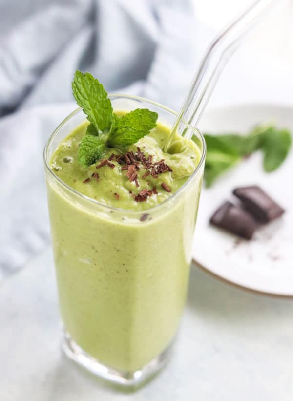
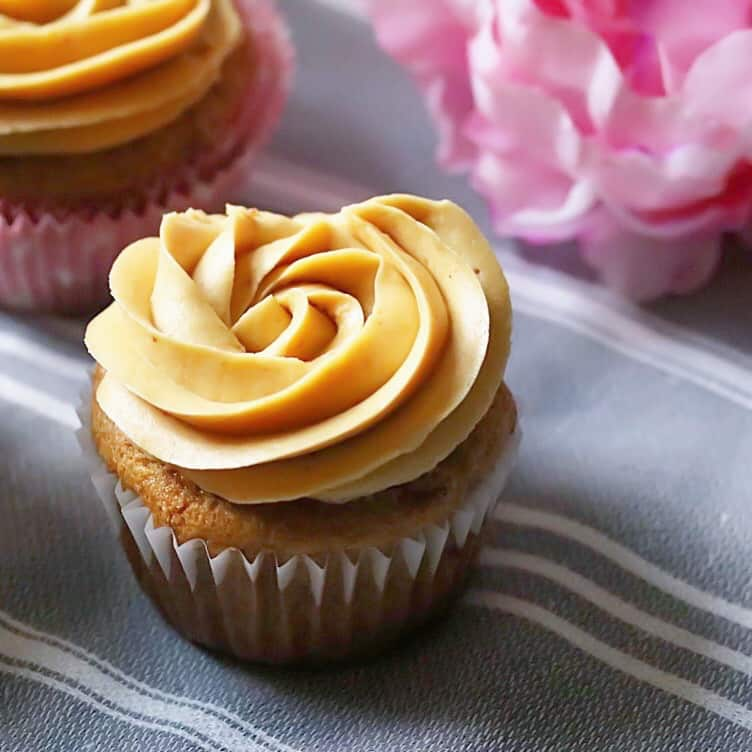
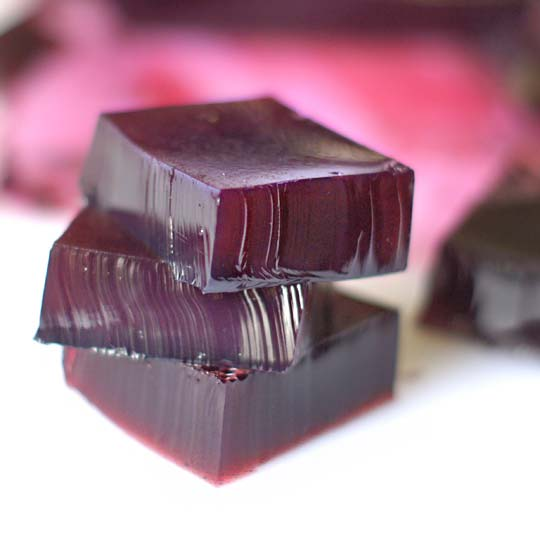

Enjoy each one fresh from the oven by
keeping the log of dough frozen and cook them individually or bake
the whole thing and live the good life.
Cinnamon Rolls
Ingredients
For the dough
3 Cups super fine almond flour
1/2 tsp salt
1/4 tsp baking soda
1/4 cup coconut oil
2 Tbls honey
2 large room temp eggs
For the filling
1/2 cup honey
1/2 cup ground pecans or walnuts
1- 2 Tabelspoon ground cinnamon
For the icing
1/4 cup coconut butter at room temp
optional honey for drizzling
Instructions
Preheat the oven to 350 degrees.
In a large bowl, combine the almond flour, salt and
baking soda.
In a separate bowl, gently beat together the melted fat,
honey and eggs. If the eggs are too cold, they will cause the
coconut oil to harden.
Add the egg mixture to the almond flour mixture and mix
until it comes together and a smooth dough is formed. Scoop up
into a ball let rest in the fridge for 10 min. This will make it
easier to work with.
Lightly grease the outside of the ball of dough. Using a
rolling pin roll the dough out between two sheets of parchment
paper into 9×13 rectangle (approx.) and between 1/4″ 1/8″ thick.
Take your time and get a good uniform rectangle.
Drizzle the 1/4-1/2 cup of honey (or even spread with
ghee and coat generously with maple sugar) evenly over the
dough, then carefully spread it around to cover the whole
surface. Honestly, I use my fingers to do this. I find that I am
less likely to tear the dough this way.
Sprinkle the raisins, grounds pecans and cinnamon (or
whatever you like) over the surface of the dough. Try to keep
the filling additions finely chopped so they do not tear through
the dough when you start rolling.
Now you’re ready to roll it up! Turn the dough so that
the short end is facing you. Starting at that end, begin to roll
the edge of the dough away from you. Try to start a tight roll
from the beginning. Continue rolling until you have a nice
uniform log. Again, take your time and get a uniform, tight
roll. If the roll cracks use the warmth of your hand to press it
together and make it smooth again. Use the parchment paper to
help you roll as needed. This dough is not as workable as a
gluten based dough would be.
Cut right away or chill if needed for smoother
cutting.With a good bread knife, cut the roll into about 9-10
thick slices. I just use the width of two to three fingers
(depending on how thick the roll is) as my guide. Shape them a
bit if needed.
Lay the rolls cut side down onto a parchment lined
cookie sheet. They can be placed apart or connected.
Bake 10-15 min.
When ready, remove from the oven and let cool for about
10 min. If you try to move them before then, they are likely to
fall apart. Drizzle with coconut butter and/or honey just before
serving.
Drizzle icing on top of rolls

Mint chocolate milkshake
Delightfully refreshing dessert that is easy to spin up.
Mint chocolate milkshake
Ingredients
1 can full-fat coconut milk
1 large avocado, pitted and diced
1 cup almond milk chilled
1/4 cup mint leaves
1/4 cup honey
1/4 teaspoon peppermint extract
dark chocolate cocoa nibs
Instructions
Pour coconut milk into a 12 cube ice tray and cover with plastic wrap, place avocado in freezer safe container. Place both in freezer for 24 hours.
Defrost frozen coconut milk and avacado for 15 minutes.
Place coconut milk cubes, avocado, and remaining ingredients into a blender, blend in high until smooth.
Mix in chocolate nibs and serve.
.

Peanut Butter Cupcakes
A moist and delicious cupcake for any
celebrations.
Peanut Butter Cupcakes
Ingredients
2 cups almond flour
1 cup natural peanut butter
1/3 cup coconut milk (full fat)
1/2 cup honey
1/4 cup water
2 eggs
1 1/2 tablespoons vanilla extract
2 tablespoons apple cider vinegar
1/2 teaspoon baking soda
For the frosting
1/2 cup ghee
1/3 cup honey
3 tablespoons peanut butter powder
3 tablespoons egg white powder
1/2 teaspoon vanilla extract
1/4 teaspoon salt
Instructions
Preheat oven to 350 degrees.
Add almond flour, peanut butter, honey, vanilla extract
and eggs into a large bowl. Combine using hand mixer at medium
speed.
Add in coconut milk and water and blend again.
Sprinkle baking soda over the batter then add apple
cider vinegar overtop. (This will cause a fizzy reaction). Mix
again on medium speed until all is incorporated. (Do not over
mix).
Pour batter into cupcake liners 2/3 of the way full.
Place into oven at 350 degrees for 25-30 minutes. At 15 minutes
in, you may very carefully turn the pan 180 degrees to ensure
even color. Place aluminum foil over top the last 5-10 minutes
to prevent browning edges. Remove from oven and place on cooling
rack
While the cupcakes are cooling, you can make the
frosting: in a small to medium bowl add 1/3 cup honey, the
slightly melted butter, vanilla extract, and combine with hand
mixer at medium to high speed. Add in egg white powder, peanut
butter powder, salt and mix again thoroughly. Frosting will be
loose. Place in freezer to cool for 10 minutes until butter has
set. Blend again until fluffy and spread or pipe onto cooled
cupcakes. Double the recipe if you wish to create the tall
frosted look pictured.

Jello
Any 100% juice can transform this dessert into whatever flavor you want.
Jello
Ingredients
Great Lakes unflavored gelatin
2 cups Welch's 100% Grape Juice
2 tablespoons honey
Instructions
Pour 1 cup grape juice COLD into a bowl/tupperware while also heating up the other cup of grape juice and bringing to a boil.
Sprinkle gelatine over cold juice and let stand for 1 minute.
Add 1 cup of heated juice and stir for 5 minutes until gelatine is totally dissolved.